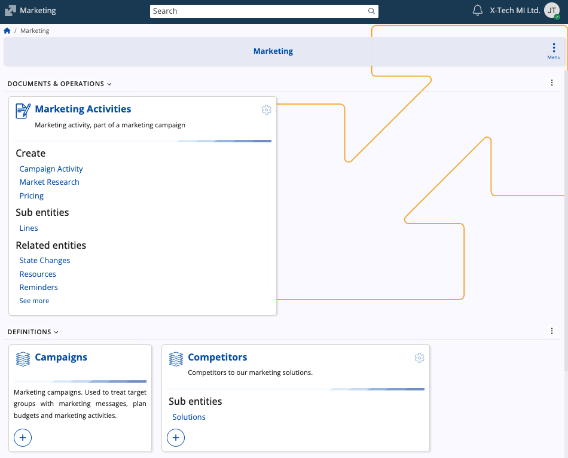

Marketing
The Marketing submodule manages the promotional aspect of the customer lifecycle, supporting the planning, execution, and analysis of marketing activities. It focuses on defining target groups, organizing marketing activities and campaigns, tracking competitors, and providing the analytical foundation for lead and opportunity management within the CRM module.

Structure
The page consists of three main sections: Documents & Operations, Definitions, and Setup.
Documents & Operations
This section outlines the core transactional document used to plan and execute all marketing activities.
Here are three different types of marketing activities you can create:
| Document Type | Purpose |
|---|---|
| Campaign Activity | Used to plan and record specific marketing actions such as promotions, events, or demonstrations. It allows linking the activity to a campaign, target group, and responsible party, as well as entering product-related details and competitor comparisons. |
| Market Research | Used to document market observations and competitive data collected through research. It enables recording findings such as product availability, in-store pricing, and competitor information for analysis. |
| Pricing | Used to define and track pricing-related marketing initiatives, including pricing adjustments, reviews, or communications about pricing strategy within campaigns. |
Definitions
This section provides the core master data used to define marketing segments, classifications, and external actors.
| Definition | Description |
|---|---|
| Target Groups | Segments of customers or prospects that campaigns and activities are aimed at. |
| Competitors | Records of competing organizations used for comparison, analysis, and intelligence. |
| Marketing Activity Types | Classification codes defining the nature of the activity (for example, Promotion, Event, Survey). |
| Distribution Channels | The methods or intermediaries used to deliver products or services to end customers. |
Setup
This section contains system-level configuration elements that control how marketing information is classified and managed.
| Setup | Description |
|---|---|
| Industries | Standard classification list of economic sectors used for segmenting markets. |
| Company Size Classes | Market segmentation based on thresholds such as employee count or revenue. |
| Marketing Solutions | Predefined bundles of products or services associated with particular industries or company size classes. |
Learn more
For details on related entities, refer to the following documentation:
Note
The screenshots taken for this article are from v.26 of the platform.